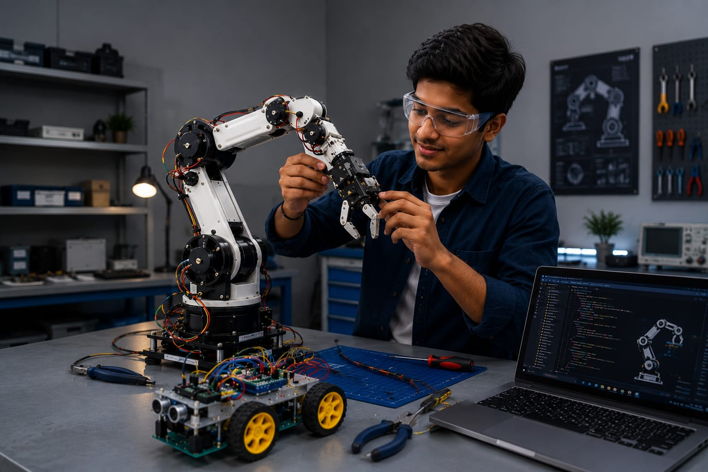

- Imagine a hotel uses a robot to deliver food to rooms.
- The robot has a mechanical body, electronic sensors, and software that controls its actions.
- All these three parts have to function properly to deliver foods to the correct rooms.
- The person who manages and develops these systems is called a Mechatronics Engineer.
- 👉 In simple words: Mechatronics Engineers combine mechanics, electronics, and software to create smart machines and robots.
Mechatronics Engineer
🧑🎨 What Do They Do?

🎓 How to Become a Mechatronics Engineer
These beginner-level courses help students learn mechanical systems, electronics, automation, robotics, and industrial control fundamentals.
Diploma in Mechatronics Engineering
Duration: 3 Years
Eligibility: Class 10 Pass
Entrance Exam: Polytechnic Entrance Exam / Merit-Based Admission
Diploma in Electronics and Communication Engineering (ECE)
Duration: 3 Years
Eligibility: Class 10 Pass
Entrance Exam: Polytechnic Entrance Exam / Merit-Based Admission
Diploma in Mechanical Engineering
Duration: 3 Years
Eligibility: Class 10 Pass
Entrance Exam: Polytechnic Entrance Exam / Merit-Based Admission
📝 Exam Details
(Click on the exam name to see full details)
Polytechnic Entrance Exam Merit-Based AdmissionNote: After Diploma, most students continue with B.Tech Lateral Entry or advanced robotics and automation courses to become Mechatronics Engineers.
These degree programs help students learn robotics, automation, mechanical systems, electronics, sensors, control systems, and industrial automation.
B.Tech / B.E. in Mechatronics Engineering
Duration: 4 Years
Eligibility: 10+2 Pass (Physics, Chemistry, Mathematics)
Entrance Exam: JEE Main / JEE Advanced / State Engineering Entrance Exams
B.Tech in Robotics and Automation
Duration: 4 Years
Eligibility: 10+2 Pass (Physics, Chemistry, Mathematics)
Entrance Exam: JEE Main / JEE Advanced / State Engineering Entrance Exams
B.Tech in Mechanical Engineering
Duration: 4 Years
Eligibility: 10+2 Pass (Physics, Chemistry, Mathematics)
Entrance Exam: JEE Main / JEE Advanced / State Engineering Entrance Exams
📝 Exam Details
(Click on the exam name to see full details)
JEE Main JEE Advanced State Engineering Entrance ExamsNote: B.Tech in Mechatronics or Robotics is the most direct pathway.
Mechanical Engineering students can also become Mechatronics Engineers by learning automation, robotics, and control systems.
These pathways help diploma holders continue their studies in mechatronics, robotics, automation, and advanced engineering systems.
B.Tech Lateral Entry in Mechatronics Engineering
Duration: 3 Years
Eligibility: Diploma in Mechatronics, Mechanical, Electronics, or related branches
Entrance Exam: State Lateral Entry Entrance Tests
B.Tech Lateral Entry in Robotics and Automation
Duration: 3 Years
Eligibility: Diploma in Mechatronics, Mechanical, Electronics, or related branches
Entrance Exam: State Lateral Entry Entrance Tests
B.Tech Lateral Entry in Mechanical Engineering
Duration: 3 Years
Eligibility: Diploma in Mechanical Engineering or related branches
Entrance Exam: State Lateral Entry Entrance Tests
Note: Lateral Entry allows diploma students to directly join the second year of B.Tech and move toward Mechatronics Engineering careers.
These advanced programs help graduates specialize in mechatronics, robotics, automation, control systems, and intelligent manufacturing.
M.Tech in Mechatronics Engineering
Duration: 2 Years
Eligibility: B.Tech / B.E. in Mechanical, Electrical, Electronics, Instrumentation, Production, Computer Science, or related branches
Entrance Exam: GATE / University PG Entrance Exams
M.Tech in Robotics and Automation
Duration: 2 Years
Eligibility: B.Tech / B.E. in relevant engineering disciplines
Entrance Exam: GATE / State PGCET
M.Tech in Control Systems Engineering
Duration: 2 Years
Eligibility: B.Tech / B.E. in Electrical, Electronics, Instrumentation, Mechatronics, or related branches
Entrance Exam: GATE / State PGCET
📝 Exam Details
(Click on the exam name to see full details)
GATE State PGCET University Entrance ExamsNote: These programs help engineers move into advanced roles in robotics, automation, intelligent systems, and industrial control engineering.
Note:
(Age limits, marks, and admission process may vary depending on the college or state. These courses are available in many colleges and universities across India. You can choose colleges based on your location, budget, and entrance exams.)
🏛️ Top Colleges for Mechatronics Engineer
(Tap on a college to visit the official website)
After 10th Pass (Diplomas)
Government Polytechnic, Pune Government Polytechnic Mumbai, Mumbai Lovely Professional University (LPU), Phagwara Chhotu Ram Polytechnic, RohtakAfter 12th Pass (Bachelor's Degrees)
Manipal Institute of Technology (MIT), Manipal Vellore Institute of Technology (VIT), Vellore SRM Institute of Science and Technology, Chennai PSG College of Technology, Coimbatore Chandigarh University, MohaliSTEP 1
Imagine you are working as a Mechatronics Engineer.
STEP 2
Your company is building a robot that delivers food to hotel rooms.
STEP 3
You check the robot's motors, sensors, and other parts.
STEP 4
You test whether the robot can move and work properly.
STEP 5
If the robot has a problem, you find the cause and fix it.
STEP 6
You help improve the robot so it can work better.
STEP 7
If you enjoy robots, machines, and solving problems, this career may suit you.
Where do Mechatronics Engineers work? (Job Roles + Growth)
These are some roles you can explore in Mechatronics Engineering.
You usually start with beginner roles and grow with experience.
🟢 Beginner Roles
🔧
Junior Mechatronics Associate
(After Short-Term Certification / Diploma)
Tests and maintains machines that use mechanical, electrical, and electronic systems.
📋
Graduate Engineer Trainee (Mechatronics)
(After Diploma / B.Tech)
Assists engineers in building and testing automated machines and systems.
🔵 Mid-Level Roles
⚙️
Mechatronics Design Engineer
(After B.Tech + Industrial Certification)
Designs smart machines by combining mechanical, electrical, and software systems.
🏭
Industrial Automation Engineer
(After B.Tech + Experience)
Programs and manages automated machines used in factories and industries.
🟣 Advanced Roles
🤖
Principal Robotics & Systems Architect
(After M.Tech + Advanced Specialization)
Designs advanced robotic systems and intelligent automation solutions.
🌍
Director of Mechatronics & Automation R&D
(After Senior Leadership Experience)
Leads teams developing next-generation machines, robots, and automation technologies.
🏭
Manufacturing Companies
Build and maintain automated machines used in factories.
🤖
Robotics Companies
Develop robots and automated systems for different industries.
🚗
Automotive Companies
Create smart vehicle systems and production equipment.
⚡
Industrial Equipment Companies
Design intelligent machines and control systems.
🏥
Medical Device Companies
Develop medical machines and healthcare equipment.
🌍
Research Organizations
Create new technologies and automation solutions.
(Click Yes or No for each question)
1. Have you ever seen a robot working in a hotel, factory, hospital, or in videos online?
2. Have you ever wondered how robots move and do their work automatically?
3. Have you ever thought about who makes sure a robot's motors, sensors, and software work together?
4. Are you interested in learning how robots function?
5. Imagine you work on making a robot. You help make sure its motors, sensors, and software work properly so it can do its job automatically. Does this excite you?